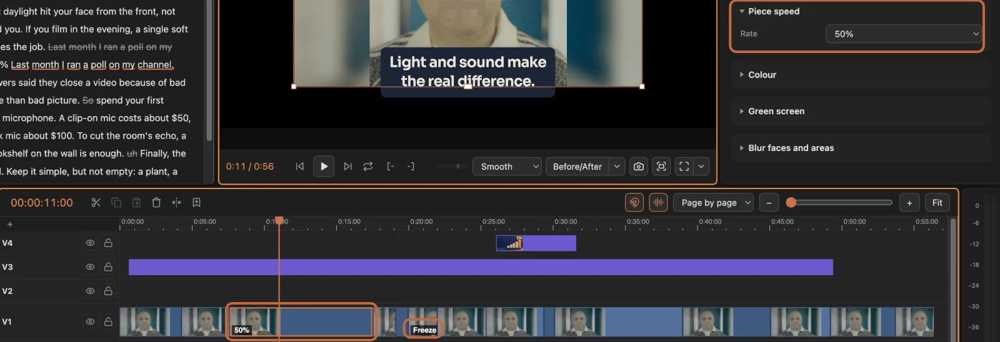

Speed, slow motion, freeze and reverse
Speed a clip up, slow it down, hold a frame or play it backwards. The sound keeps its pitch.

Change the speed
- Right-click a clip or a piece, Speed…, or set it in Clip › Speed (Piece speed for a piece of the recording). The clip shows its rate on the timeline, such as 50%.
- With the Rate Stretch tool (R), drag an edge: longer plays slower, shorter plays faster.
Slow motion
Where a video is slowed, its frames have to be filled in. For a shot, choose how under Slow motion in the Clip tab; for the recording, in Picture › Default slow motion:
- Repeat frames;
- Blend frames;
- Make new frames (slower export): the smoothest. The viewer blends; the export makes the new frames.
Freeze and reverse
- Freeze Frame (⇧ F) holds the frame at the playhead for two seconds; it shows as Freeze on the timeline.
- Reverse plays the clip backwards; Play Forward Again undoes it.
Music to the end
For a music clip, Last to the End of the Video in the Clip tab: short music loops with smooth seams, long music is cut, and either way it fades out at the end.